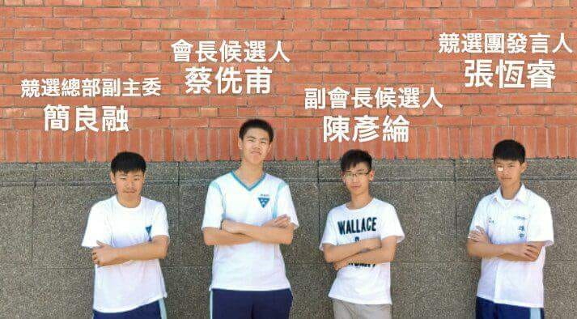

政治並非一蹴可幾，在雄中學聯會期間，我因著文句能力擔任公關部次長，負責各項對外文案以及跟各校、各店家的對口
當然，我學習到不只是為公部門籌畫、組織與管理的能力，更讓我結識到社會組的朋友與見識思考方式
學生會一年最大的選舉就是會長選舉
2018會長選舉這場選舉之中，影響我最重要的並不是政見好壞或實行與否
而是領導者的高度
選前辯論就算台下滿是舉著"下台"、"不要再講了"標語的瘋狂同學們，就算臉書學校版上幾乎都衝著自己而來，我依然記著前一屆副會長跟我說的一句話:「這就是選舉」。
「讓對方生氣，只會更不利讓他服氣而已」陶冶性情，是這場選舉收穫最多的一部份。
大學開始，我期待自己將學生的自由用在踏查台北和周圍縣市土地、人文的活動力。從都更、市街規劃到景點的潛力都是我每次思考的課題。一個國家有沒有希望要先問一個人有沒有希望。一個人有沒有希望要問他想像30年後自己是否能完成夢想。更要先問的是他曾經是否有夢想。
一個雜亂的市容、一份快慢不一社群與現實工作的差異、一個從大學租到中年的租房生活、一眼只得仰望見天頂的高牆、先顧自己準沒錯的風氣，他的世界怎會有他人、怎會有顏色、怎看的到未來大好前程中快樂的自己?
我只知道一件事，就是我可以看著未來，讓每一個人都能享受到未來。
社會關懷就是實現的第一步，在大學期間我時常參與口腔衛生推廣，其中在口腔衛生服務隊擔任總召期間，帶領著數十位同學不分寒暑，來到花蓮富里與南投國姓的小學陪伴小朋友們。
習慣是生活之始，教育乃國家之本。我相信在多日教導而養成習慣之下，每一位小朋友都能從生活中最基本的嘴巴、牙齒開始改變未來的生活。
物質上的關懷並非長久之計，鄉村的復育及復甦是每一位國民的責任。從教育開始政府應該要讓每一位都市小朋友都認識每一片土地的情懷，而對於全球化下鄉村的劣勢，政府應該要主動帶領看見、創造競爭力。